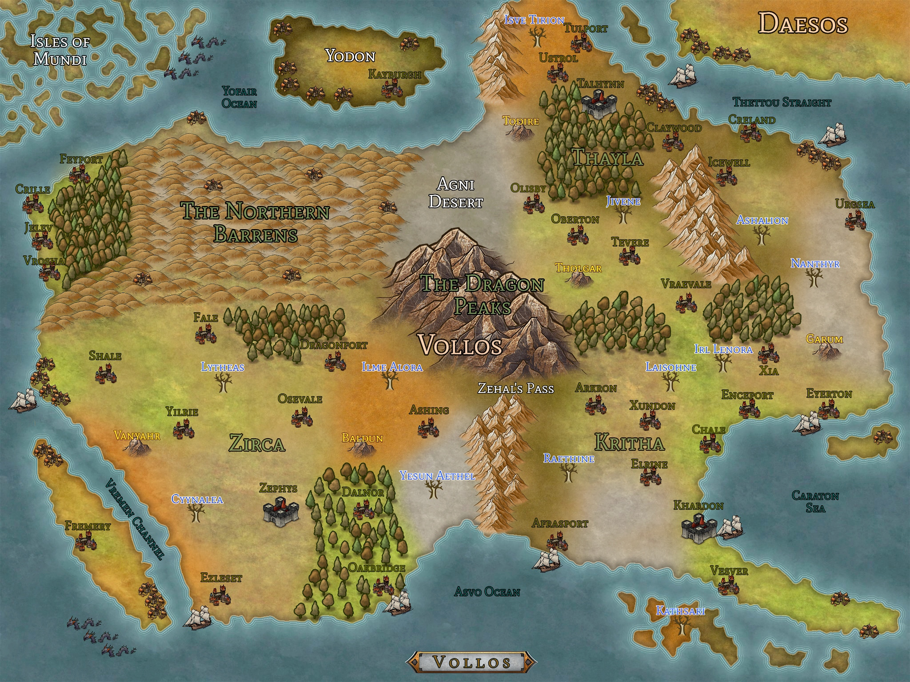

— Another student
When I'm not studying control methods for rigid-body spacecraft, there is a good chance I am at an ice rink throwing myself into the air and practicing control methods for the human body. See a video of a recent routine below.
Highlighted Videos

When the pandemic reached into Fall 2020, I decided to try a new virtual way to engage with other students. After a little organizational juggling and a lot of imagination, the result was the continent of Vollos, ruled by the empires of Zirca, Kritha, and Thayla, and the assorted powers that threaten the society built by these empires over the past few millenia. Put yourself in the mind of me as the Dungeon Master, and imagine all that could be happening across the map below. This campaign is concluded as of Spring 2022.
